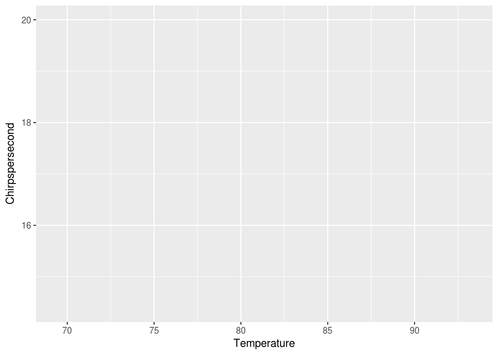
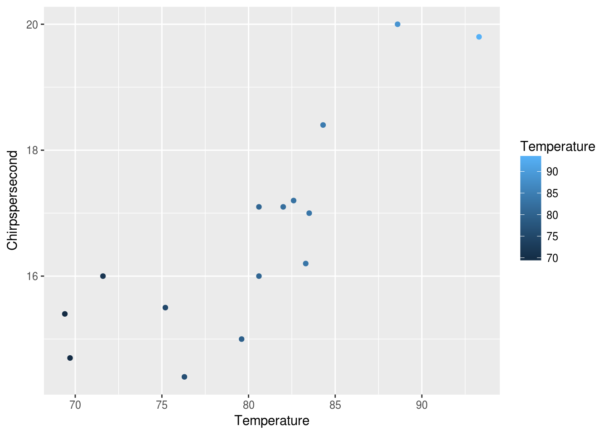
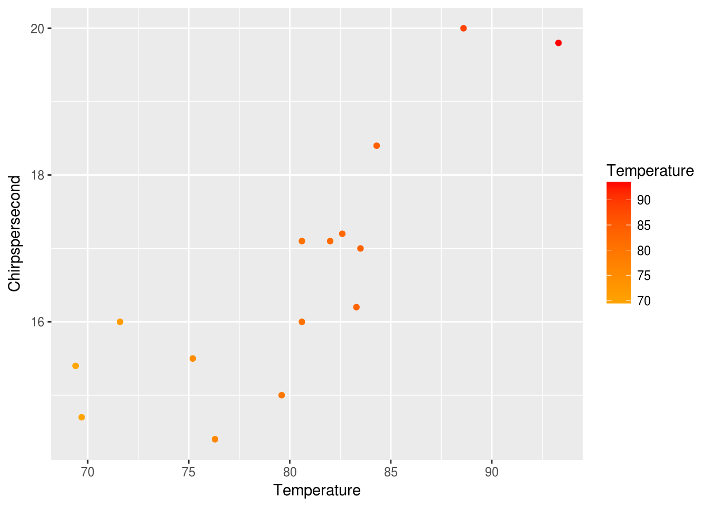

2 Interacting with Simple Data
2.1 What is RStudio?
Today, we will be working with R in RStudio. While there are other programs we can use to write R, RStudio has become the standard environment for working with R.

RStudio has four main windows: a file viewer, an interactive console, an environment viewer, and directory viewer.
Let’s focus on the interactive console first.
2.2 Coding in the console
Click in the interactive console. You’ll notice a cursor will start blinking next to the > symbol. This is called the command prompt; the computer is waiting for us to give it a command; it’s “prompting” us, and letting us know it’s ready.
Given that R was made for statistics, we should expect it to have no problems with numbers and math. Let’s try some basics!
1## [1] 11 + 5## [1] 610 + 12## [1] 22Pressing enter after each line of code runs it, and R will tell us the answer right away. This lets us interact with R quickly.
R, like other programming languages, can remember information we give it in named variables. This is called assigning variables with a value. Let’s tell R to remember some information for us.
x <- 1
y <- 5
z <- 10The < and - can be seen as an arrow pointing to the left. You can think of this as saying, “assign the value 1 to a variable named x”. If you are familiar with other programming languages, <- and = can be used interchangably in R, but the preferred way is to use <-. We can also see all the information we’ve told R to remember in the environment viewer.
We can ask R what the values of these variables are:
x## [1] 1y## [1] 5z## [1] 10We can also use these variables like so:
x + y## [1] 6x + z## [1] 11z * y## [1] 50And if we try to ask R about a variable it doesn’t know about, R will tell us that it can’t find that variable:
a## Error in eval(expr, envir, enclos): object 'a' not foundThis is neat and all, but we’re here to dig into data, so let’s get to it!
2.3 Loading in data
We are going to load in CSV files today to get data into R. R is powerful for statistics because it has a great base collection of functions, or named procedures, for common things we’d want to do with data, like reading in a CSV. R’s base way of doing this is with a function named read.csv. Like the named variables, we can get what read.csv is by referring to its name. For more info on loading data, see here.
read.csv## function (file, header = TRUE, sep = ",", quote = "\"", dec = ".",
## fill = TRUE, comment.char = "", ...)
## read.table(file = file, header = header, sep = sep, quote = quote,
## dec = dec, fill = fill, comment.char = comment.char, ...)
## <bytecode: 0x2d9eae0>
## <environment: namespace:utils>Here, we get back just what read.csv is. In order to tell R to do or run the function, we need to run:
read.csv()## Error in read.table(file = file, header = header, sep = sep, quote = quote, : argument "file" is missing, with no defaultTo learn more about any function, we can add a ? in front of the function name like this:
?read.csvIn order to know what file to read in, we need to give the function the location of the file:
read.csv(file = 'crickets.csv')## Chirpspersecond Temperature
## 1 20.0 88.6
## 2 16.0 71.6
## 3 19.8 93.3
## 4 18.4 84.3
## 5 17.1 80.6
## 6 15.5 75.2
## 7 14.7 69.7
## 8 17.1 82.0
## 9 15.4 69.4
## 10 16.2 83.3
## 11 15.0 79.6
## 12 17.2 82.6
## 13 16.0 80.6
## 14 17.0 83.5
## 15 14.4 76.3RStudio reminds us what different functions are named as we start typing them into console, and reminds us what additional information each of those functions may need when we type the (. It also automatically completes the function call for us with the ).
When we read in the CSV, R printed the data out to us. In order to really use the data though, we need to tell R to remember the data by assigning it to a variable. We want to name our variables so that they’re easy to remember and indicative of what information they are holding onto.
crickets <- read.csv(file = 'crickets.csv')Now, when we ask R about crickets, we get the data back!
crickets## Chirpspersecond Temperature
## 1 20.0 88.6
## 2 16.0 71.6
## 3 19.8 93.3
## 4 18.4 84.3
## 5 17.1 80.6
## 6 15.5 75.2
## 7 14.7 69.7
## 8 17.1 82.0
## 9 15.4 69.4
## 10 16.2 83.3
## 11 15.0 79.6
## 12 17.2 82.6
## 13 16.0 80.6
## 14 17.0 83.5
## 15 14.4 76.3There are many other ways to load in data from other file types. Googling “read xls to R” will give us some great answers on how to read in data as an Excel sheet. We also have a quick list of standard ways to load other common file types in the appendix.
Let’s get a quick sense of what this data is like!
2.4 Glancing at the data
Here’s a table of some quick functions we can run on the data to learn about it:
| Code | Description |
|---|---|
names(crickets) |
Column header names |
dim(crickets) |
Number of rows by number of columns |
nrow(crickets) |
Number of rows |
ncol(crickets) |
Number of columns |
str(crickets) |
Structure of data |
summary(crickets) |
Summary of the data |
View(crickets) |
View data in file viewer |
We can also look at parts of the data using verbs like filter() and select(), provided by the dplyr package.
install.packages('dplyr')## Installing package into '/home/travis/R/Library'
## (as 'lib' is unspecified)library(dplyr)##
## Attaching package: 'dplyr'## The following objects are masked from 'package:stats':
##
## filter, lag## The following objects are masked from 'package:base':
##
## intersect, setdiff, setequal, unionWe can look at just specific rows matching a certain condition, using filter():
filter(crickets, Temperature < 75)## Chirpspersecond Temperature
## 1 16.0 71.6
## 2 14.7 69.7
## 3 15.4 69.4filter(crickets, Temperature == 82)## Chirpspersecond Temperature
## 1 17.1 82or just specific columns, using select():
select(crickets, Chirpspersecond)## Chirpspersecond
## 1 20.0
## 2 16.0
## 3 19.8
## 4 18.4
## 5 17.1
## 6 15.5
## 7 14.7
## 8 17.1
## 9 15.4
## 10 16.2
## 11 15.0
## 12 17.2
## 13 16.0
## 14 17.0
## 15 14.4select(crickets, Temperature)## Temperature
## 1 88.6
## 2 71.6
## 3 93.3
## 4 84.3
## 5 80.6
## 6 75.2
## 7 69.7
## 8 82.0
## 9 69.4
## 10 83.3
## 11 79.6
## 12 82.6
## 13 80.6
## 14 83.5
## 15 76.3We can pass the output of one of these to another function to calculate the mean.
mean(unlist(select(crickets, Temperature)))## [1] 80.04Notice how we nested one function inside another? There’s another way to do this, a way that’s more readable and easier to reason about. We can use the pipe operator, represented by the %>% symbol, to achieve the same thing.
crickets %>% select(Temperature) %>% unlist() %>% mean()## [1] 80.04You read this left to right, and you can see the steps the data go through in logical order.
We can use this approach to calculate our own means, standard deviations, and medians:
crickets %>% select(Chirpspersecond) %>% unlist() %>% median()
crickets %>% select(Chirpspersecond) %>% unlist() %>% sd()
crickets %>% select(Temperature) %>% unlist() %>% mean()
crickets %>% select(Temperature) %>% unlist() %>% median()
crickets %>% select(Temperature) %>% unlist() %>% sd()We can also ask R for the max and the min values:
crickets %>% select(Chirpspersecond) %>% unlist() %>% max()
crickets %>% select(Chirpspersecond) %>% unlist() %>% min()
crickets %>% select(Temperature) %>% unlist() %>% max()
crickets %>% select(Temperature) %>% unlist() %>% min()There’s many more calculations we can run on the data, but plotting the data will help us we a better picture of it.
2.5 Visualizing the data
Base R can plot our data, but the wonderful thing about R being open-sourced is that it’s encouraged many people to expand it’s functionality by writing groups of functions, called packages. These packages are available for everyone to install and use. To plot our data, we will use an outside package, called ggplot2, which has become the standard way to plot data in R.
We can install the ggplot2 package by calling the install.packages function like this:
install.packages('ggplot2')## Installing package into '/home/travis/R/Library'
## (as 'lib' is unspecified)While the package is installing, let’s take a break!
Once the package installed, we need to tell R to load it so we can use it.
library(ggplot2)To start, we can tell ggplot what our data is:
ggplot(data = crickets)
This gives us back a rather boring blank gray square. At this point, ggplot does not know what about the data to map to where. We can tell it to map Temperature as the x and Chirpspersecond as the y, like this:
ggplot(data = crickets, mapping = aes(x = Temperature, y = Chirpspersecond))
At this point, ggplot seems to know where things should go, but there’s no points. This base layer is ready with our coordinates and axis, but we would also like ggplot to map the data in the same way to a layer of markings that represent the data. Let’s try points:
ggplot(data = crickets, mapping = aes(x = Temperature, y = Chirpspersecond)) +
geom_point()
We now have points, each with its y mapped to Chirpspersecond and the x mapped to Temperature. We can also mapped the color of each point to the temperature like this:
ggplot(data = crickets, mapping = aes(x = Temperature, y = Chirpspersecond)) +
geom_point(mapping = aes(color = Temperature))
This gives the points colors mapped from the Temperature along a default scale. We can adjust the scale to give a sense of the temperature like this:
ggplot(data = crickets, mapping = aes(x = Temperature, y = Chirpspersecond)) +
geom_point(mapping = aes(color = Temperature)) +
scale_color_gradient(low = "orange", high = "red")Let’s take some time to experiment with different visualizations using ggplot2. See the data visualization cheat sheet for ideas.
One of the reasons that ggplot is so popular is that it has a very extensible syntax. ggplot is built on the concept of a grammar of graphics. The grammar of graphics is a way to build plots in a structured way. Every plot consists of a dataset, aesthetics to map of the dataset, and a geom that defines how to display the data. Let’s break down our function call above into its graphical grammar elements:
- dataset = the crickets data frame
- aesthetics = the Temperature and Chirpspersecond variables
- geom = the point geom (geom_point function call) is used to create a scatterplot
The syntax may seem a little confusing at first, but it can create some very powerful results once you understand how it works. It allows you to build up plots in layers. It also allows you to manipulate plots in a way similar to manipulating data (via function calls). For example, we can assign our plot to a variable p.
p <- ggplot(data = crickets, mapping = aes(x = Temperature, y = Chirpspersecond)) +
geom_point(mapping = aes(color = Temperature)) +
scale_color_gradient(low = "orange", high = "red")
p
Now we can manipulate our plot like any other variable. Let’s add a title.
p + ggtitle("Cricket Chirps vs. Temperature")
We can also add another geom just as easily. Let’s add a smoothing function to show what a linear model might look like.
p + ggtitle("Cricket Chirps vs. Temperature") + geom_smooth()## `geom_smooth()` using method = 'loess'
Once we have a plot we like, we can save our last plot to an image file very easily:
ggsave(filename = "plot.png")## Saving 7 x 5 in image## `geom_smooth()` using method = 'loess'2.6 Modeling the data
From the plots, we see a potential correlation between Chirpspersecond and Temperature. If we were ever without our smart phones and thermometers, out in the country with some crickets, we might want to know if we can use the Chirpspersecond to calculate the Temperature.
We can calculate the linear model for Temperature vs. Chirpspersecond using R’s lm function:
lm(Temperature ~ Chirpspersecond, data = crickets)##
## Call:
## lm(formula = Temperature ~ Chirpspersecond, data = crickets)
##
## Coefficients:
## (Intercept) Chirpspersecond
## 25.232 3.291To calculate a linear model for Chirpspersecond from Temperature, we would do this:
lm(Chirpspersecond ~ Temperature, data = crickets)##
## Call:
## lm(formula = Chirpspersecond ~ Temperature, data = crickets)
##
## Coefficients:
## (Intercept) Temperature
## -0.3091 0.2119There’s actually more information that lm tells us. Let’s take a look by first telling the computer the remember the result as a variable called crickets_lm.
crickets_lm <- lm(Chirpspersecond ~ Temperature, data = crickets)We can use the broom package to help us get to the information stored in the model. Let’s install that first:
install.packages('broom')## Installing package into '/home/travis/R/Library'
## (as 'lib' is unspecified)library('broom')For example:
tidy(crickets_lm)## term estimate std.error statistic p.value
## 1 (Intercept) -0.3091419 3.10858391 -0.09944782 0.9222999135
## 2 Temperature 0.2119250 0.03871123 5.47450961 0.0001066719We get the slope and the intercept from the estimate column.
Let’s use tidy() and geom_abline() to add a line on top of our scatterplot so we can eyeball how our linear model fits.
lm_intercept <- crickets_lm %>% tidy %>% filter(term == "(Intercept)") %>% select(estimate) %>% unlist()
lm_slope <- crickets_lm %>% tidy %>% filter(term == "Temperature") %>% select(estimate) %>% unlist()
ggplot(data = crickets, mapping = aes(x = Temperature, y = Chirpspersecond)) +
geom_point(mapping = aes(color = Temperature)) +
scale_color_gradient(low = "orange", high = "red") +
geom_abline(slope = lm_slope, intercept = lm_intercept, color = "maroon")Additionally, cor and cor.test are two functions that can tell us about correlations between paired samples.
As before, the ? can help us learn more:
?cor
?cor.testWe can run these functions on our data by using crickets[,1] as the x, and crickets[,2] as the y like so:
cor(x = crickets[,1], y = crickets[,2])## [1] 0.8351438cor.test(x = crickets[,1], y = crickets[,2])##
## Pearson's product-moment correlation
##
## data: crickets[, 1] and crickets[, 2]
## t = 5.4745, df = 13, p-value = 0.0001067
## alternative hypothesis: true correlation is not equal to 0
## 95 percent confidence interval:
## 0.5642928 0.9436856
## sample estimates:
## cor
## 0.83514382.7 Working with a simple dataset
So far, we’ve:
Loaded in the data from a csv
crickets <- read.csv(file = 'crickets.csv')Learned more about the data as a whole
| Code | Description |
|---|---|
names(crickets) |
Column header names |
dim(crickets) |
Number of rows by number of columns |
nrow(crickets) |
Number of rows |
ncol(crickets) |
Number of columns |
str(crickets) |
Structure of data |
summary(crickets) |
Summary of the data |
View(crickets) |
View data in file viewer |
Looked at the data by rows and columns
| Code | Description |
|---|---|
filter(crickets, Temperature < 85 |
Rows with temperature less than 80 |
filter(crickets, Chirpspersecond > 15 |
Rows with chirps per second greater than 15 |
select(crickets, Chirpspersecond) |
First column, Chirpspersecond |
select(crickets, Temperature) |
Second column, Temperature |
Calculated descriptive statistics on the data
| Code | Description |
|---|---|
mean() |
Average Temperature |
median() |
Median Temperature |
sd() |
Standard deviation of Temperature |
max() |
Maximum Temperature |
min() |
Minimum Temperature |
Made plots of our data
| Code | Description |
|---|---|
ggplot() |
create base layer of plot |
geom_point() |
scatterplot geom |
geom_smooth() |
smoothing geom with confidence intervals |
geom_abline() |
line geom |
ggtitle() |
add title to plot |
Applied statistical modelling to the data
| Code | Description |
|---|---|
cor(crickets) |
calculate correlation coefficient |
cor.test(crickets) |
test for statistically significant correlation |
lm(crickets) |
create a linear model |
Crickets is a rather small and well-formed dataset. Let’s practice our new skills on a slightly more realistic dataset and learn additional skills for cleaning the data and making a report.